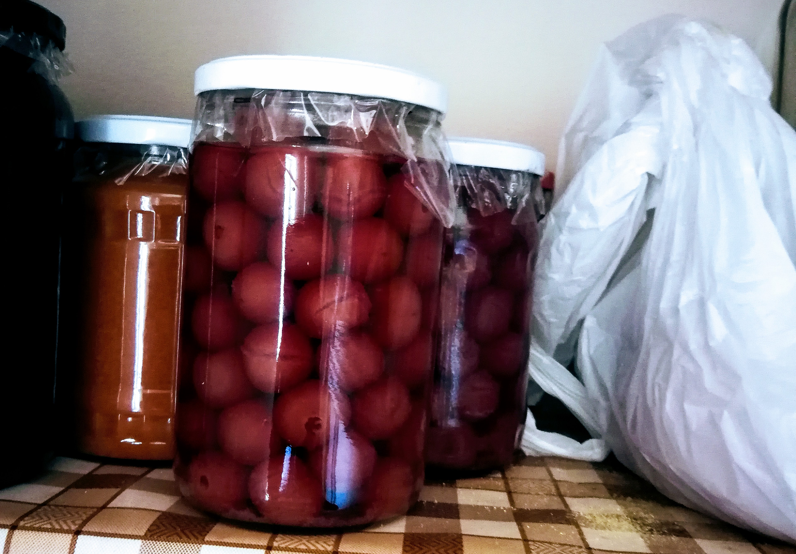

Annak örülj, hogy egyátalán dolgozhatsz, mert ha már idős leszel, akkor már nem teheted meg!
- Zelei Mária Magdolna
A Mamámról
Mint ahogy a címből is kiderül, hogy Zelei Mária Magdolna a nagymamám volt, édesapám
édesanyja.
Mamámnak nagyon különös élete volt, amit nem is igazán ismertem eddig. A megható történethez
kapcsolódni fog majd egy 1960-ban íródott újságcikk, amit nagyon szívesen megosztok Veletek ebben a
részben.
A Mamám 1945. április 1-én született Budapesten Ontkó Mária néven. Azonban születése után körülbelül
fél évvel édesanyja egy házaspárra bízta fél éves gyermekét Zelei Józsefnek, és feleségének
Kiskorényi Margitnak. Igen, Ők voltak számomra az apai ágról a dédszüleim, habár csak a
dédnagymamámat ismertem személyesen.
Mamám a Dédiékkel - A Nagymamám középen látható
Dédnagymamám végtelenül kedves, és szeretettel teli; egyszerű falusi hölgyként nagyon is művelt, és
talpra esett ember volt. Mamámat örökbefogadták, de felmerülhet mindenkiben a kérdés. Vajon Ontkó
Máriát
miért bízta másokra az édesanyja? Ez később fog kiderülni abból a féltve őrzött újságcikkből, amit
már
korábban említettem.
Az újságcikk csupán kevesebb, mint fél oldal, de elolvasásakor döbbenünk rá igazán, hogy
Nagymamámnak milyen élete is volt gyerek korában. Eljött az idő, hogy megmutassam a legendás
rovatot. Megosztom az eredeti újságcikket, és a cikk jobb oldalán legépelem az eredeti szöveget, nem
csak a jól olvashatóság miatt, de akadálymentesség szempontjából is.
AZ ELSŐ TALÁLKOZÁS
Egymásra talált a két testvér, Vili és Marika
A járási tanács igazgatási osztályán a napokban fiatal kislány - Ontkó Mária - és
nevelőszülei izgatottan vártak valakire. Egyszercsak nyílt az ajtó és márman léptek be
rajta. Az egyik belépő - egy húsz év körüli fiú - egy pillanatra megállt, majd odalépett
a lányhoz, és átölelte. A kislánya fiú mellére borulva hangos zokogásba tört ki. A fiú
megsimogatta szőke fürtjeit, és csendesen vígasztalta:
Ne sírj, Marika.
Két testvér találkozott életében először ...
A tizenöt éves Ontkó Máriát örökbe akarták fogadni nevelőszülei. Zelei József és
felesége, akik hat hónapos kora óta saját gyermekükként nevelték Őt. Zelei néni féltő
gonddal, gyengédséggel igyekezetzt pótolni az édesanyját. Az édesanyáról, aki örökre
otthagyta Náluk a kislányt, többé nem hallottak. Csak arra emlékeztek, hogy valahol
Királd községben lakott édesanyjával, és testvéreivel együtt. Na
meg arra a fényképre,
amely egy kisfiút ábrázolt nagy pöttyös labdával, akiről azt mondta, hogy az az ő fia.
Nem is vették komolyan Zelei néniék azt, hogy örökre Övéké lesz a kislány. Titokban
attól féltek, egyszer majd megkerül az édesanya, és meg ........................ Pedig
már el sem tudták képzelni a házat Marika nélkül. A kislány pedig igyekezett
kedvességével, szófogadással meghálálni a sok jóságot, és örömet szerezni a
nevelőszülőknek.
Zelei néni, és Zelei bácsi sokat tanakodtak, hogy el kellene menni Királdra, és
meg
kellene tudni, hogy mit csinál Marika édesanyja. Erre azonban soha nem került sor.
Nemrégiben felkeresték a járási tanácsnál dr. Torday József gyámügyi előadót, és
elmondták, hogy örökbe szeretnék fogadni Marikát. Elmesélték, hogyan lett Ontkó Máriából
az iskolában Zelei-Ontkó Marika.
Torday elvtárs elhatározta, hogy megkeresi a kislány édesanyját, vagy rokonait. Levél
indult a Királdi Községi Tanácshoz: Él-e, és mivel foglalkozik Marika édesanyja.
A királdi Községi Tanács levele lesújtó volt. Az édesanya 1956-ban szervi szívbajban
elhunyt.
Rövidesen másik levél érkezett Torday elvtárshoz. A levél írója Rostás Vilmos volt, a
pettyes labdával lefényképezett egykori fiú - Marika bátyja -, akire Zelei néni még ma
is jól emlékezik. A húsz éves Vili és közvetlen hozzátartozói nem tudtak a kislány
létezéséről. A kiraldi tanács előadója közölte Velük, hogy miért érdeklődnek a Ceglédi
Járási Tanácstól, Marika édesanyja felől. Levelébe kéri Torday elvtársat, tegye lehetővé
a találkozást soha nem látott húgával.
A találkozásnál kiderültek részletek is. Az édesanyának mind a két gyermeke házasságon
kívül született. Az elsőt, a Vilit még valahogyan megbocsájtották szülei, hozzátartozói.
De a másikat, a kis Marikát már nem merte hazavinni.
Eddig a szomorú, igaz történet. A két árva most már nincs egyedül. Torday elvtárs a
találkozás napját kettős ünneppé varázsolta, időpontját úgy választotta meg, hogy az
egybe essen Marika 15. születésnapjával.
A nevelőszülők szeretnék, ha Marika továbbra is Náluk maradna, hiszen Ő már régen a
családhoz tartozik.
Ha száz kilométerek választják is majd el egymástól az egymásra talált két testvért,
összekapcsolja Őket az édesanya emléke, aki már nem élhette meg a nagy találkozás
pillanatát.
Személyes Emlékeim
Egy átlagos napi rutin
Már nagyon kicsiként majdnem minden hétvégémet a Mamámnál töltöttem. Az első időkben még
testvéremmel Krisztinával aludtunk a Mamánál. Reggeli rutinunk úgy nézett ki, hogy mi még aludtunk
tesómmal, a Mama elszaladt gyorsan a boltba reggelinek- , és ebédnek valóért. Mire hazaért, addigra
már fent voltunk, és mesét néztünk a televízióban. Ekkor a Mama ugrott is Neki összeütni egy kis
reggelit.
Általában mindig tejbegrízt, vagy tejberizst ettem, illetve ettünk Nála, de amivel sosem tudtam
betelni, az a Mama bundáskenyere volt, jó meleg citromos fekete teával. Ekkor még azt sejtette a
Mamám, hogy én a tejbepapikért vagyok oda leginkább. Azok is nagyon finomak voltak, és majd
megvesztem értük, de a hétvégi bundáskenyeres reggeliknek meg volt a varázsa. A friss bundáskenyér,
és a jó meleg citromos tea illata, ekkor Titi is a keresztapám is mindig velünk reggelizett.
Mindenki elégedetten hagyta el az asztalt.
Kedvenc napindító tevékenységünk tesómmal a csigagyűjtögetés volt. Volt egy virágos kert, és volt egy sor
növény, amit meghonosítottak az éti csigák. Rengeteget szedtünk össze tesómmal. Volt, hogy 2 teli
közepes befőttes üvegnyit.
Voltak a Mamának, csirkéi, kis csibéi is. Nagyon szerettem őket nézni, sokszor be is mentem a
jószágokhoz. Egyszer mikor csak csibéi voltak a Mamának, beakartam hozzájuk menni megsimogatni őket,
de olyan tityi-totyi voltam, hogy mire bementem volna hozzájuk, az összes csibe kiszabadult. Először
probáltam egyenként visszavinni őket a helyükre, de mikor mentem egy másikért, újra kijött az a
csibe is, akit már visszavittem. Egyszerűen nem bírtam velük. Nem tudom, hogy végül szóltam-e a
Mamának, vagy a Titinek, avagy sem, de emlékeim szerint, nem szólhattam Nekik, hiszen, nem akartam
kikapni. Arra sem igazán emlékszem, hogy kikaptam-e, de gondolom nem örültek neki. Kikaptam-e vagy
sem, az élet megbűntetett. Ráadásul elég viccesen.
Kis csibék (A kép csak illusztráció) - Fotózta: Karim Manjra
Mivel Mamámnak csirkéi voltak, evidens, hogy azokat le is vágta. Gondolom nem kell bemutatnom, hogy
zajlik ilyen vágás. A Mamám mindig lefejezte a tyúkokat, illetve csirkéket. Nagyon sajnáltam szegény
állatokat. Ekkor kicsit haragudtam is a Mamára. Gyerekként nem igazán értettem, hogy miért kell
szegény jószágokkal ilyet tenni, sem azt, hogy miből is készül az a finom tyúkhúsleves, vagy
csirkepörkölt. De mi is volt az élet nagy bűntetése? Amikor a Mama csirkéket vágott, egy adagot
megcsinált, majd bement a házba. Én kíváncsi gyerekként odamentem a vágóhelyre megnézni a
szerencsétlen állatokat, mire egyszercsak egy csirke elkezdte csapkodni a szárnyát (fej nélkül), és
kergetni kezdett. Ez kisgyerekként borzalmas volt átélni, felnőtt fejjel meg inkább vicces.
Egy csapatnyi csirke (A kép csak illusztráció) - Fotózta: William Moreland
Akárhányszor voltam a Mamámnál, nem volt olyan nap, hogy soha nem szólt volna a rádiójából a jó
ebédhez szóló nóták-. Állandóan azt hallgatta. Ahogy egyre nagyobb gyerek voltam, egyre
jobban untam
ezeket a nótákat. Ezeket a nótákat, inkább a főzés, illetve ebéd közben hallgatta.
Amikor megfőzte az ebédet, egyből enni kezdtünk. Minden étel forró volt, annyira frissen készültek.
Szinte a fazék is izzot a forró levesektől. Sokszor mikor vendégségben voltunk a Mamánál, külön
díszes edényekbe, vagy hőálló üveg tálalókba tette az asztalra a húslevest, de azokban az edényekben
is olyan forró volt a leves, hogy csodálkozom, hogy sok-sok éven keresztül hogy nem repedtek meg a
hőtől, ráadásul át lettek szedve. A Mama pedig puszta kézzel tálalta fel a tűzforró húsleveseket.
Ebéd után már a pihenésé volt a főszerep. A Mama a délelőtti főzésektől, én meg a nővérem pedig az
állandó szaladgálástól, és játszástól. Én nem mindig aludtam. Volt mikor egy egyhátteres kvízműsort
néztem egy no-name csatornán. Attól a műsortól pedig még okosabb lettem, csak egy gond volt vele.
Rájöttem, hogy a no-name csatorna a nap 24 órájában ment, és a kérdéssorok mindig időrendben
ismétlődtek. Egy idő után én is elszundítottam rajta.
Mikor meg volt a megérdemelt pihenés, akkor utána jött a jó kis desszert. A desszert, amit én, és
Krisztina is nagyon szerettünk nem volt más, mint egy kistálkányi (az én esetemben néha volt kettő
is) Cseresznye befőtt. Mamám nagyon finom cseresznye befőttet tudott csinálni. Mi hárman csak
egyszerűen Cserkónak hívtuk. A legjobb csemege volt a világon.

Egy üveg cseresznye befőtt Mamám kamrájában.
Mikor meg volt a megérdemelt pihenés, akkor utána jött a jó kis desszert. A desszert, amit én, és
Krisztina is nagyon szerettünk nem volt más, mint egy kistálkányi (az én esetemben néha volt kettő
is) Cseresznye befőtt. Mamám nagyon finom cseresznye befőttet tudott csinálni. Mi hárman csak
egyszerűen Cserkónak hívtuk. A legjobb csemege volt a világon.